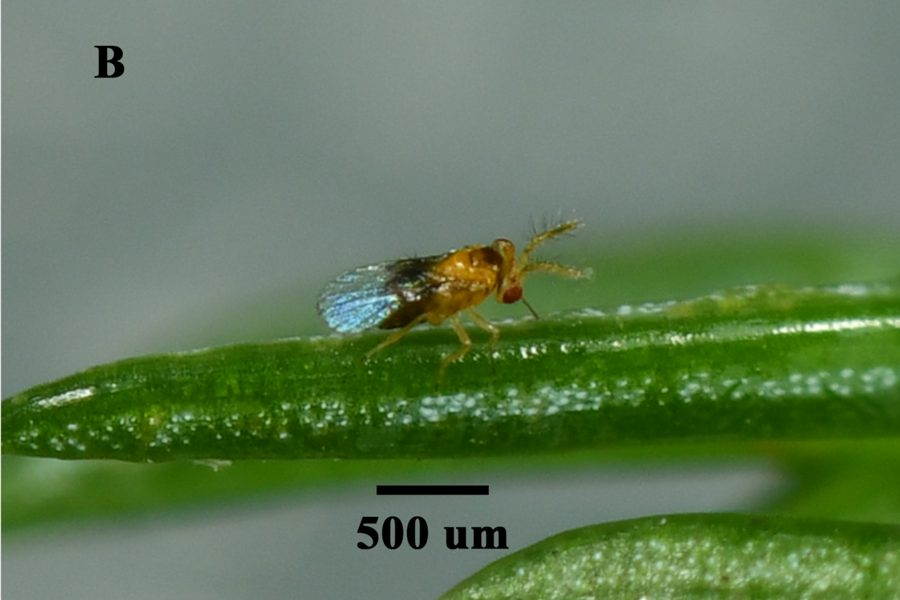

ट्राइकोग्रामाTrichogramma Egg Parasitoid
Trichogramma chilonis · Trichogrammatidae · INS-0185

- Scientific name वैज्ञानिक नाम
- Trichogramma chilonis Ishii, 1941
- Family कुल
- Trichogrammatidae
- Hindi हिंदी
- ट्राइकोग्रामा
- Local names स्थानीय नाम
- trichogramma, trikogramma, egg parasitoid
- Status here यहाँ की स्थिति
- native
- Movement आवागमन
- Resident, here all year
- Known from कहाँ दर्ज
- Others have published records from the wider Awadh–Purvanchal plain, none yet from Basti–Ayodhya अवध–पूर्वांचल से दूसरों के प्रकाशित अभिलेख, बस्ती–अयोध्या से अभी नहीं
- IUCN IUCN
- not evaluated
- Review समीक्षा
- audited and independently read
When to look कब देखें
Present all year. साल भर मौजूद।
Uses and possibilities उपयोग और संभावनाएँ
Drawn from the documented uses in the profile below, where each is labelled traditional, current or a research lead. All uses →
ट्राइकोग्रामा / Trichogramma Egg Parasitoid
Trichogramma chilonis Ishii, 1941 — Trichogrammatidae
ट्राइकोग्रामा — सब से छोटी ततैया, जो पतंगों और तितलियों के अंडों में घुसकर अपने अंडे देती है। यह इतनी छोटी होती है कि नज़र से नहीं दिख सकती — माइक्रोस्कोप से देखना पड़ता है। ये ततैया खेती के कीटों को खुद से ख़ुद नष्ट कर देती हैं। मक्का, गन्ने, और दूसरी फ़सलों को बर्रे (फॉल आर्मीवर्म) और दूसरे पतंगों से बचाने के लिए वैज्ञानिकों ने इसी ततैया को खेतों में छोड़ा है। यह जैव कीट नियंत्रण का सब से अच्छा उदाहरण है।
Quick Identification त्वरित पहचान
| Feature | Description |
|---|---|
| Size | Extremely small, 0.3–0.4 mm long; one of the smallest insects |
| Colour | Dark brown to black; some species show slight colour variation |
| Body shape | Compact; vaguely wasp-like, but proportions very different from larger wasps |
| Wings | Small, well-developed, with very few veins (distinctive pattern) |
| Antennae | Short; filiform; difficult to see without magnification |
| Eyes | Very small |
| Legs | Short, slender; adapted for walking on host eggs |
| Ovipositor | Concealed within the abdomen; not visible externally |
Field tip: Trichogramma is visible only under a hand lens or microscope. In the field, its presence is detected by observing parasitized host eggs (darkened, collapsed, or with emergence holes) rather than seeing the wasp itself. The wasp emerges from eggs of host insects as a tiny adult.
हिंदी — कैसे पहचानें: इतनी छोटी है कि नज़र से नहीं दिख सकती। शीशे या माइक्रोस्कोप से देखनी पड़ती है। पतंगों के अंडों में से निकलती है।
Morphology आकारिकी
Biometrics:
| Measurement | Range |
|---|---|
| Body length | 0.3–0.4 mm |
| Body width | 0.1–0.15 mm |
| Antennae | 0.15 mm |
| Wing span | 0.6–0.8 mm |
Colour: Overall dark brown to black. Antennae slightly lighter. Some individuals may show faint metallic sheen.
Head: Very small, oval. Eyes extremely reduced and simple (not true compound eyes as in larger insects, but ocelli-like structures). Mouth adapted for feeding on host body fluids inside the egg.
Antennae: Filiform (thread-like); very short relative to body length; difficult to see without magnification.
Thorax: Compact. Pronotum short. Mesothorax dominates. Legs relatively long compared to body size; adapted for walking on the smooth surface of host eggs.
Wings: Well-developed, fully functional, and capable of flight despite the tiny size. Hindwing and forewing fused in a peculiar way (characteristic of Hymenoptera). Wing venation extremely reduced — only a few veins visible even under magnification, giving the wing a distinctive "bare" or "simple" appearance.
Abdomen: Compact, somewhat flattened dorsoventrally. The female carries a concealed ovipositor (egg-laying tube) inside the abdomen.
Sexual dimorphism: Males and females are difficult to distinguish without expert examination; males are slightly smaller.
हिंदी: इतनी छोटी है कि दिख ही नहीं। काली-भूरी रंग की। पंख तो है पर बहुत छोटे।
Behaviour & Ecology व्यवहार और पारिस्थितिकि
Trichogramma chilonis is a solitary endoparasitoid of lepidopteran (moth and butterfly) eggs. It represents one of the most important natural enemies of crop pests and is used widely in biological control programs worldwide.
Host-finding behaviour: The female wasp searches for host eggs, likely using a combination of visual cues, olfactory signals (chemical odours), and tactile searching. Upon finding a suitable host egg, she lands on it and examines it with her antennae.
Parasitism process: Upon confirming the egg is suitable, the female uses her concealed ovipositor to pierce through the egg shell and deposit a single egg (or very few eggs) inside the host egg. The host egg darkens, often turns black or brown, and becomes "parasitized." A single host egg can produce one or several wasps, depending on the size of the egg (depending on the species and size of host egg).
Development inside host: The Trichogramma larva develops inside the host egg, consuming the yolk and eventually the entire contents of the egg. The larva pupates inside the egg shell. The adult wasp chews an exit hole and emerges.
Host range: Trichogramma chilonis is a generalist, parasitizing eggs of many lepidopteran species, including:
- Sugarcane borers (Chilo, Scirpophaga)
- Corn borers (Ostrinia, Chilo)
- Armyworms (Spodoptera)
- Codling moth (Cydia pomonella)
- Other lepidopteran pests
Longevity and reproduction: Adults are short-lived (typically 7–14 days in the field), but are extremely prolific. A single female can parasitize dozens to hundreds of host eggs during her lifetime, depending on host availability and environmental conditions.
Seasonality: Year-round activity in tropical regions with multiple host crops. In regions with distinct seasons, activity follows the phenology of host populations.
No host-specificity to particular host plants: The wasp is associated with host insect species, not plant species; it will parasitize eggs of its host lepidopteran wherever they are laid.
हिंदी: पतंगों के अंडों में अपने अंडे देती है। अंदर ही अंदर बढ़ता है। अंडे को पूरी तरह खोखला कर देता है। बहुत सारी ततैयें एक अंडे से निकलती हैं।
Life Cycle / Phenology जीवन चक्र
| Stage | Duration | Temperature-dependent |
|---|---|---|
| Egg (inside host) | 3–5 days | Shorter at 25–30°C |
| Larva (inside host) | 4–7 days | Overlaps with egg development |
| Pupa (inside host) | 3–5 days | |
| Adult emergence | Complete | All stages within host egg |
| Preoviposition period (female) | 1–3 days | Before egg-laying begins |
| Reproductive life | 7–14 days | Highly productive during this period |
| Total generation time | 10–20 days | Highly variable with temperature |
Multiple generations: In tropical and subtropical regions like eastern UP, multiple overlapping generations occur year-round. Generation time is shortest in warm season (July–September) and longer in cool season (December–February).
Seasonal pattern in eastern UP:
- January–March: Slower generation time due to cool temperatures; fewer host crops
- April–June: Increasing populations as weather warms and spring crops host insect populations
- July–September: Peak activity; multiple host crops; rapid generation time; multiple overlapping generations
- October–December: Declining populations as main crops are harvested; generation time increasing
- Year-round: Provided suitable host eggs are available (in multi-crop systems)
हिंदी: दस से बीस दिन में एक पीढ़ी तैयार हो जाती है। गर्मी में बहुत तेज़ी से बढ़ता है।
Host Plants or Prey आहार
This wasp does not feed on plants; it is a parasitoid of insect eggs.
Host insect specificity: Trichogramma chilonis is a generalist parasitoid, with a broad host range within Lepidoptera:
Primary pest hosts (in agricultural systems):
- Sugarcane Borer (Chilo sacchariphagus, Scirpophaga nivella) — important pest
- Corn Borer (Chilo partellus, Ostrinia nubilalis) — important pest
- Fall Armyworm (Spodoptera frugiperda) — major pest
- Tobacco Armyworm (Spodoptera litura) — major pest
- Other Spodoptera species (armyworms, cutworms)
- Codling moth, fruit flies, and various other lepidopteran pests
The wasp is not host-specific and will parasitize eggs of other lepidopteran species where available.
हिंदी: पतंगों के अंडों को खोजती है। सब तरह की पतंगों के अंडों में घुस सकती है।
Predators / Natural Enemies शत्रु
At such a small size, Trichogramma is vulnerable to:
- Parasitoids of parasitoids (hyperparasitoids): Specific wasp species that parasitize Trichogramma
- Predatory mites: Small predatory mites can consume Trichogramma adults
- Spiders: Only if a Trichogramma lands directly on a web
- Insecticides: Broad-spectrum insecticides kill Trichogramma as well as target pests; this is a major limitation in integrated pest management programs
The small size provides some protection through crypticity (difficulty of detection by larger predators).
हिंदी: इतनी छोटी है कि शिकारियों को दिख भी नहीं जाती। कीटनाशक से मर जाती है।
Agricultural / Human Relevance कृषि प्रासंगिकता
Biological control agent — pest control. Trichogramma chilonis is one of the most economically important beneficial insects used in biological control programs worldwide. It is mass-produced in insectaries and released into fields to control lepidopteran pests.
Advantages of Trichogramma-based biocontrol:
- Extremely efficient; a single female parasitizes many host eggs
- Early intervention — parasitizes eggs before larvae emerge and cause damage
- Reduces the need for insecticides, lowering chemical residues and environmental impact
- Cost-effective in large-scale agriculture
- Compatible with integrated pest management (IPM)
Documented uses in India:
- Sugarcane borer control (established program for decades)
- Corn borer management
- Armyworm control on vegetables and field crops
- Research and extension programs through ICAR (Indian Council of Agricultural Research) and state agricultural universities
Field release protocols: In India, Trichogramma chilonis is reared and released according to standardized protocols:
- Parasitized host eggs (typically against Mediterranean flour moth, Ephestia kuehniella, or another factitious host) are mass-produced
- Cards or capsules containing parasitized eggs are released in fields at set rates (typically 10,000–50,000 wasps per acre per application)
- Multiple releases are made at weekly or bi-weekly intervals during the pest's egg-laying period
- Timing is based on crop phenology and pest emergence
Compatibility with other control methods: Trichogramma is highly sensitive to broad-spectrum insecticides but compatible with selective insecticides and biopesticides (neem, botanical extracts). IPM programs often include Trichogramma releases alongside other strategies.
Research directions:
- Improving strain selection for higher parasitism rates
- Integration with other natural enemies
- Developing resistance to specific pest biotypes
- Optimizing release rates and timing for different crops and regions
- Enhancing long-term field persistence
uses:
- pest-control
हिंदी: खेतों में सब से ज़्यादा इस्तेमाल होने वाली ततैया। चीनी की फ़सल, मक्का, और सब्जियों में छोड़ते हैं। कीटनाशक से अच्छा विकल्प है।
Expected Locally स्थानीय रूप से अपेक्षित
Not a field record. Written from published accounts for eastern Uttar Pradesh. No confirmed local sighting yet — if you have seen it, that is what the atlas needs.
अभी तक स्थानीय पुष्टि नहीं। यह विवरण प्रकाशित स्रोतों से है, किसी अवलोकन से नहीं।
Not a field record. This distribution is based on published records of Trichogramma chilonis occurrence in India and eastern Uttar Pradesh. GBIF holds published records from the wider Awadh–Purvanchal plain.
ये दूसरों के प्रकाशित अभिलेख हैं, परियोजना के नहीं। यह भारत में हर जगह है।
Expected throughout Basti district and eastern Uttar Pradesh wherever lepidopteran (moth and butterfly) eggs are present — that is, everywhere in agricultural fields, gardens, and wild vegetation. The wasp is naturally occurring and also intentionally released in sugarcane, corn, and vegetable fields.
Detection requires microscopic examination of parasitized host eggs (which become darkened or produce emergence holes) rather than direct observation of the wasp.
Distribution वितरण
Global range: Pantropical and subtropical distribution; native to Asia. Now distributed worldwide through human-mediated introductions and mass-rearing programs for biological control.
In India: Ubiquitous; present in virtually all agricultural regions. Native; also widely cultured in government and private insectaries.
In Uttar Pradesh: Widespread and common; intentionally released and naturally occurring.
In Basti district / eastern UP: Present throughout the region; more abundant during crop seasons and in areas where biological control programs are active. Natural populations occur year-round.
Research Questions शोध प्रश्न
- कौन से समय में (मई, जून, जुलाई) ट्राइकोग्रामा को खेतों में छोड़ने से मक्का के बरर (फॉल आर्मीवर्म) पर सब से बेहतर नियंत्रण मिलता है?
- How does parasitism rate vary with host plant species — are sugarcane borer eggs more or less susceptible to parasitism than corn borer eggs?
- What is the optimal release rate (number of Trichogramma per unit area) for different crops and pest densities?
- क्या एक बार खेत में छोड़ी गई ट्राइकोग्रामा दूसरी पीढ़ी में अपने आप से ज़्यादा संख्या में बढ़ जाती है?
- How does the presence of broad-spectrum insecticides (e.g., pyrethroids) affect Trichogramma persistence and effectiveness in field conditions?
- क्या खेत के किनारे की जंगली घास-फूस में भी ट्राइकोग्रामा रह सकती है और क्या वह वहाँ से खेत में वापस आ सकती है?
Similar Species मिलती-जुलती प्रजातियाँ
| Species | Key Difference | Hindi |
|---|---|---|
| Trichogramma other species (T. pretiosum, T. evanescens, etc.) | Extremely difficult to distinguish without expert examination; differ slightly in host range and climatic preference | दूसरी ट्राइकोग्रामा जातियाँ |
| Other egg parasitoid wasps (Telenomus, etc.) | Even smaller; different morphology; different host range | दूसरी अंडा परजीवी ततैयाँ |
Field rule: Microscopic wasp emerging from darkened or collapsed lepidopteran eggs, with very small body size (visible only under magnification), simple wing venation, and the ability to parasitize many host eggs — this is likely Trichogramma chilonis or a closely related Trichogramma species.
Taxonomy & Classification वर्गीकरण
Original description. The species was described by Ishii in 1941 in Japanese literature. Trichogramma chilonis was named from specimens reared from Chinese host materials.
Subspecies. No subspecies are currently recognised within T. chilonis, though regional strains or populations may show variation in host preference and thermal characteristics.
Family and order placement. Order Hymenoptera (wasps, bees, ants); family Trichogrammatidae (egg parasitoids). The family comprises approximately 75 species of minute egg parasitoids, distributed worldwide.
Phylogenetic notes. Trichogramma is one of the most ancient and successful parasitoid lineages, with a fossil record extending back at least 100 million years. The family is characterized by extreme host generalism (flexibility in host choice) compared to more specialized parasitoids, which may explain its ecological success.
IUCN status rationale. Not evaluated. The species is abundant and widespread; no conservation assessment is warranted. The species benefits from human-mediated mass-rearing and release, so populations are actually augmented by human activity.
हिंदी: बहुत पुरानी जाति है। दुनिया भर में है। भारत में सदियों से रहती होगी।
Photo Gallery फोटो गैलरी
No photos yet — Trichogramma is too small for standard photography. Microscope images would be ideal: media/species/trichogramma_egg_parasitoid/microscope_01.jpg (adult wasp at 400x magnification) media/species/trichogramma_egg_parasitoid/parasitized_eggs_01.jpg (parasitized host eggs)
Wanted documentation:
- Microscope image of adult at 200–400x magnification showing wing venation and body proportions
- Parasitized host eggs showing darkening and emergence holes
- Field-released Trichogramma cards in sugarcane or corn fields
References संदर्भ
- Ishii, T. (1941). Trichogramma chilonis, a new species of Trichogrammatidae parasitic on Ephestia kuehniella. Proceedings of the Japanese Academy 17: 307–309. [original description]
- Flanders, S.E. (1930). Mass production of Trichogramma minutum Riley and observations on the sexual ratios of an allied species, Trichogramma sp. Journal of Economic Entomology 23: 245–250.
- Ramamurthy, V.V. (2006). Encyclopaedia of Indian Insects with Photographic Illustrations. ICAR, New Delhi.
- Kapur, A.P. & Sharma, A.K. (1982). Biocontrol of sugarcane pests. Indian Farming 32: 12–15.
- GBIF Occurrence Data — Trichogramma chilonis, Asia (2024).
- Richards, O. W. & Davies, R. G. (1977). Imms' General Textbook of Entomology. 10th ed. Chapman & Hall, London.
Source file: species/fauna/insects/trichogramma_egg_parasitoid.md